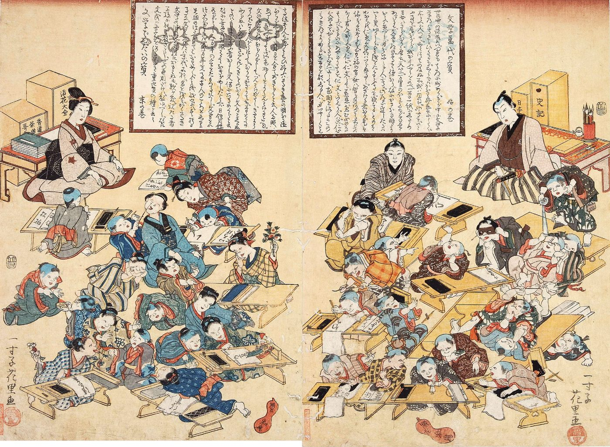

スパイラルダイナミクス › 4 / 7
青の段階
正しい道はひとつしかなく、それは書物に書かれていて、権威に従えば報われる。規則、伝統、家族、義務、罪悪感。文明を作った価値観であり、いまも世界の大人の四割ほどがここにいる、と言われる段階です。どんな条件から生まれ、何を大事にし、健全なときと行きすぎたときにどう見えるか。いまの自分の中にある青、次の段階への壁、そして日本の「家制度」との重なり。

正しい道は、ひとつしかない。それは聖典に、あるいは憲法に、あるいは家訓に書かれていて、権威に従えば報われ、背けば罰せられる。規則を守り、伝統を守り、家族と国に尽くし、欲を抑える。この理論が「青」と呼ぶのは、そういう価値観のまとまりです。この理論を紹介する動画は、この段階に「絶対主義、順応、規則、そして文明の勃興」という題を付けています。
読む前に、序論で書いたことを一つだけ繰り返します。段階は格付けではありません。青は「遅れた人」の色ではなく、ある条件のもとで人の心が出した答えの形です。動画自身も、「青の人の大半は、まじめで、働き者で、忠実で、親切な人たち」だと念を押しています。
どんな段階か
青は、その前の段階「赤」の限界から生まれる、と説明されています。赤は、力の強い者が欲しいものをその場で取る段階で、群れの長が全員を支配する形です。「けれど、何万人もの人が住む文明を、ひとりの首領の支配だけで作ることはできない。全員が同じ目的に乗り、同じ規則と法に従うための、組織の原理が要る」。法、役所、裁判、警察。そして、それを支える文字。「帳簿をつけ、税を集め、役人の名前を書き留め、道と郵便で結ぶ。二千年前の文字と街道は、初期のインターネットのようなものだった」。
この段階の心は、たいてい、厳格な父の姿をした神を信じます。「規則を定め、少しでも背けば罰する。許しの多い神ではない」。そして、この世で自分を抑えて尽くした分の報いは、あとから、多くは死後に来る、と考えます。
動画は、青が大事にする言葉を長く並べています。絶対の真理。信仰と確信。はっきりした善悪。勤勉、規律、義務。法と秩序。正義。序列と、いまある秩序。家族。目上への敬意。神と国。名誉と評判。礼儀と身なり。祈り。聖典、そして憲法のような建国の文書。誓いと儀式。節制、貞節、自制。慈善。忠誠。国境。人格を鍛えること。
「この言葉を並べて青の人に語りかければ、その人のいちばん深いところに響く。狡猾な政治家なら、この一覧を持って集会に行き、聴衆の信じていることをそのまま言って、揺るぎない支持を得る」。動画はこれを、価値というものの力の説明として使い、同時に、危険の説明としても使っています。
青にとって、人生には決まった道筋と結果があります。「これをすればこうなり、あれをすればああなる」。秩序、安全、安定を求め、細部まで正確に管理する。「完璧な役人」。信頼でき、予測でき、忠実である。
衝動を抑える道具は、義務と罪悪感です。「なぜ遊びに行かないのか。聖典に背くからで、背けば罪人だと感じるから」。青にとって悪魔は比喩ではなく、実際に自分を誘惑している存在で、感情や欲望はその誘惑として抑えられます。誰にも決まった居場所があり、序列は神から手渡されたものなので、問い直すものではない。聖典は字義どおりに読み、解釈はひとつしかない。神は自分の側にいて、自分の文明の存続を望んでいる。共同体から追われることは、生死にかかわることです。
どこに現れるか
動画が挙げる例は、宗教、国、組織、個人の癖にまたがっています。話し手の見立てとして読んでください。
・現在の中東の一部。ただし話し手は、そこに橙（個人と経済）が混じりはじめていることも同時に指摘しています。「サウジアラビアで女性の運転が認められたのは、青が橙へ動きかけている姿で、それを堕落と見る人たちが国内にいるのも、同じ理由から」
・インドのカースト制、儒教の中国、ピューリタン、修道院、教会、そして禅の僧堂。「決まったやり方でやる。従わなければ棒で打たれる。青の型の精神修行」
・軍隊、警察、消防、制服のある組織、少年団。国歌に起立すること
・日本からの例として、武士の掟、切腹、特攻、比叡山の千日回峰行、茶道。規律と名誉と、型を守ること
・そして、話し手が強調する例が、旧ソ連と初期の中国の共産主義です。「愛国主義と共産主義は正反対だと思われているが、心の構造は同じで、中身が違うだけ。初期の共産主義者は進歩派ではなく、深く青だった」
動画は、世界の大人のおよそ四割が青にいて、文化的な影響力のおよそ三割を青が占める、という数字を挙げています（動画が依拠した資料の推計で、学術的な統計ではありません）。そのうえで、「都会に住む教育を受けた人は、世界がどれほど青か、自分の国がどれほど青かを、見くびりがちだ」と言います。「海沿いの大都市から見て、内陸が『遅れている』ように見えるのは、遅れているのではなく、その段階にいる人がどれほど多いかを、まだ実感していないから」。
いまの自分の中にあるもの
この段階は、遠い国や昔の話としてだけ現れるのではありません。動画は、青が反応する「引き金」の一覧も挙げていて、そこを読むと、自分の中の青が見えてきます。
相対主義と、答えが分からないこと。無神論と懐疑。知識人と、難しい理屈。ヒッピー、快楽、身の持ち崩し。決まりを破る人、罰を逃れる人。序列のなさ。多文化、国際化。裏切り。聖典や社会の役割を問い直すこと。冒涜。宗教の領分に踏み込む科学。「動画の下に『内容は好きだが、汚い言葉を使わないでほしい』と書く人がいる。それも、体裁と品位を守ろうとする、青の感度です」
どの段階も、行きすぎると毒になる、と動画は言います。青が行きすぎると、原理主義になり、聖戦を正当化し、心が箱の中に閉じ、群衆の心理に流されやすくなる。像や書物という「地図」を、指しているもの以上に崇める。絶えず罪悪感の中にいる。「高い理想を掲げながら、それに届かない自分を責め続ける。届かないのは弱いからではなく、規則と信念で自分を縛るやり方では、そもそも届かないから」。抑えたものは消えず、隠れて出てくる。「説教壇では清く語り、閉じた扉の向こうでは、説いていたことの反対をする。青が他の段階から偽善に見えるのは、そのため」。
子育てに出ると、子どもに完璧を求め、子どもが子どもでいられず、大人になっても「自分は十分ではない」という罪悪感を持ち続け、それを次の子どもに渡す。最悪の形は、異端の迫害、民族の浄化です。
一方で、健全な青は、文明そのものです。約束を守る、時間を守る、持ち場を離れない、共同体のために身を切る。「手榴弾に身を投げる兵士」を、動画は青の極端な形として、しかし敬意をもって挙げています。
「神がこの土地を与えた」「決まりを守れ」「行いは言葉より雄弁だ」「正直は最良の策」「用心に越したことはない」「チームのために身を捨てろ」。動画は、この種の言葉が、青の聴衆にはそのまま響き、他の段階には限界がすぐ見える言葉だ、と言っています。自分がこの言葉を聞いて、安心するか、身構えるか。それが、自分の中の青の量の目安になります。
次の段階への壁
次の段階は「橙」で、個人の成功、科学、自由、豊かさを大事にする段階です。青から見ると、橙は物欲と放縦に見えます。「中東の一部が青にとどまっているのは、西洋の物質主義と性の自由を見て、堕落と感じ、それに抵抗しているから。橙の行きすぎは確かにあるが、あとで直る。間違いは、青に引き返すことのほうだ」。
・自分の段階と、次の段階について、深く読む。「自分について読むことが、自覚をくれる」
・橙と緑と黄を、裁くのをやめる。「怠け者のヒッピー、金の亡者、頭でっかちのエリート、という札を貼っているかぎり、そこへは行けない」
・「悪」という考えそのものを手放す。「人を道徳で裁くたびに、自分も裁いている。それが罪悪感の底なし沼になっている」
・伝統にしがみつくのをやめる。「二千年、変わらずに残った伝統はひとつもない。聖典も言葉も国も宗教も、みな変わってきた」
・疑い、自分の頭で考える。権威が誤り、乱用されることに気づく。「信念は真実と同じものではない」
・他の国に行き、食べたことのないものを食べ、自分の文化の決まりごとが、どれほど恣意的かを見る
・自分の序列の下に置かれている人の靴を履いてみる。すべての人に共通するものを見る
・科学を学び、成功についての本を読み、規則をゆるめ、自分のために何かを成し遂げたいという渇きを育てる。「それが、橙へ運ぶ」
・そして、どの段階にも共通する鍵として、座って、考え、書き、自分の行いを振り返ること
動画は、この移り変わりが数年、ときに数十年かかると言い、「青から橙への一段だけでも、それだけかかる」と念を押しています。
日本語では
日本には、青の価値観が法律の形をとっていた時期があります。
明治民法は、親族のうち狭い範囲の人を「戸主」と「家族」としてひとつの家に属させ、戸主に家の統率の権限を与えました。戸主は、家族の結婚と養子縁組への同意権、住む場所を指定する権利、従わない家族を家から除く権利（離籍）を持ち、家督は長子がひとりで相続しました。序列、義務、家への献身、目上への服従が、慣習ではなく、条文でした。
この制度は、1947年5月2日に廃止されます。戸籍の単位は「夫婦と未婚の子」になり、三代以上の親族を同じ戸籍に載せることが禁じられました。ウィキペディアの項目は、明治維新で職業選択の自由が保障されたとき、すでにこの生活の型は崩れはじめており、諸外国の例からも「家族制度が徐々に崩壊して個人主義へ至ることが歴史の必然と思われた」が、慣習として根づいている以上、法律で強引になくすこともためらわれた、と説明しています。
この理論の言葉で言えば、家制度の48年は、青の価値観が制度として残った期間であり、その廃止は、社会の重心が青から橙へ動いた出来事です。そして、上の動画が「日本からの例」として挙げた切腹や特攻や千日回峰行が、いまも多くの日本人にとって、たんなる過去ではなく、どこかで敬意の対象であり続けていることは、青が「なくなった」のではなく、いまの自分たちの中に層として残っていることのしるしです。動画の言い方では、「人も国も、ひとつの色ではなく、混ざった絵」です。
出典・参考
- Actualized.org, Spiral Dynamics - Stage Blue（YouTube）段階の定義、価値の一覧、生まれる条件、例、引き金、行きすぎ、次へ進む方法。引用は自動生成の字幕による
- Spiral Dynamics（英語版ウィキペディア）段階は生活の条件への答えであり、それ自体として良くも悪くもないという理論の立場
- 家制度（ウィキペディア）1898年から1947年まで続いた戸主と家督の制度